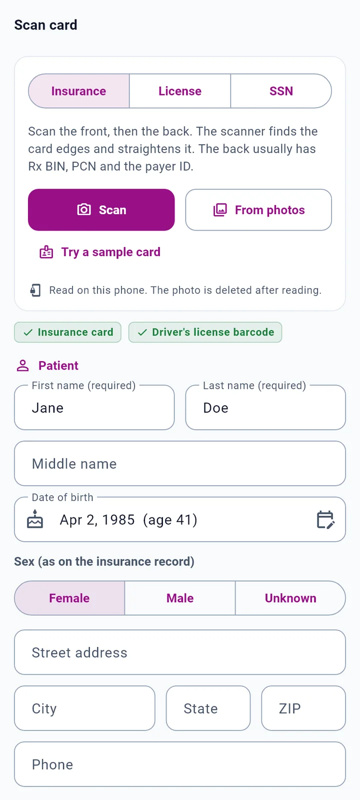
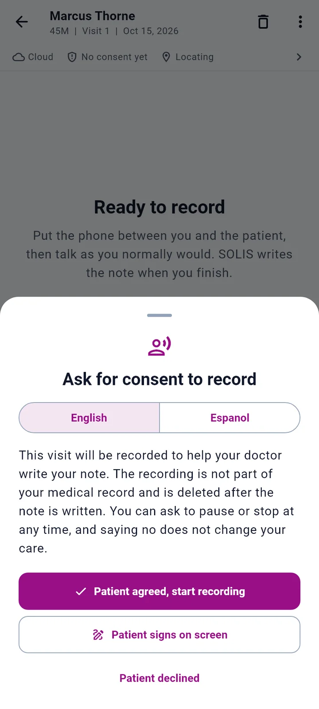
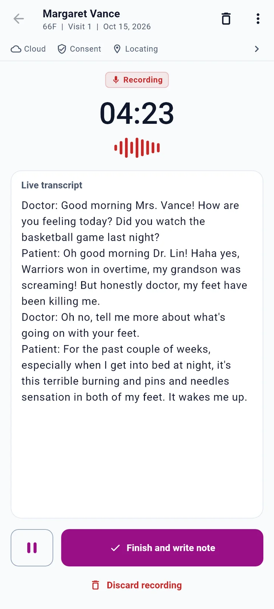
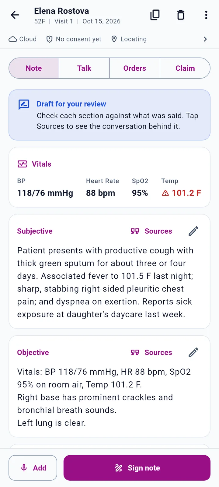
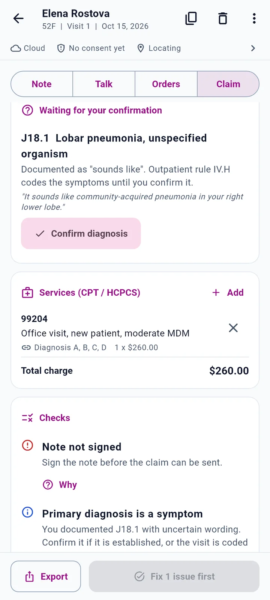
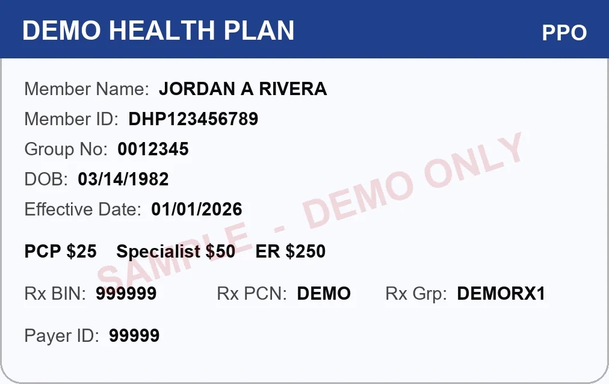

Look at your patient. SOLIS writes the note.
SOLIS listens to the visit, writes the note, and builds a clean claim, on your phone. Made for physicians and small practices without a big billing department.
The problem in published numbers
of EHR and desk work for every hour of direct clinical face time with patients, inside the clinic day. Then another 1 to 2 hours each night.
of a primary care physician's weekday spent in the EHR, including 1.4 hours after clinic hours.
of medical group leaders said their claim denial rates rose in early 2024 compared with the same period in 2023.
Five steps, one phone, no typing in the room.
From the front desk to the claim, everything happens on the same account, one visit at a time.





Real screens from SOLIS 1.0 with fictional demo patients.
Codes from the patient's own words. Checked before the claim leaves.
Symptoms stay symptoms until you confirm
"My feet burn at night" is coded as a symptom until you confirm a diagnosis, following official outpatient rule IV.H. Uncertain wording waits for your one-tap confirmation.
Every code shows where it came from
Each diagnosis links to the words it came from, so checking it takes a glance, not a search through the transcript.
Procedure codes that match the diagnosis
The E/M level is picked by place of service, new or established patient, and medical decision making.
Checks before the claim goes out
Against the official CMS code sets for the date of service. Anything that would get the claim rejected or denied is flagged and must be fixed before billing.
Every check explains itself
Tap Why on any check to see the rule in plain English, what it means on this claim, its official citation and the official guideline text. It works offline.
Official coding notes on every diagnosis
Excludes1, Excludes2, Code first, Use additional code, Code also and 7th-character notes from ICD-10-CM, shown under the code they apply to.
The 4 are NCCI procedure-to-procedure pairs, mutually exclusive pairs, the most comprehensive code, and lab panels.
Checked against the official code sets for the date of service
- ICD-10-CM FY2026
- ICD-10-CM FY2027
- HCPCS Oct 2026
- 2026 Physician Fee Schedule
- NCCI MUE
- NCCI add-on edits
- Medicare Code Editor v44
- Excludes1
- 7th-character rules
Sex and age conflicts Diagnoses that exclude each other (Excludes1) Missing 7th character External-cause code listed first Modifier 25 needed Add-on code without its primary Units over the daily limit Maternity and manifestation code lists Code first and use additional code notes
Eligibility at check-in
Coverage is checked through the Stedi clearinghouse when the visit starts, with copay and deductible when the payer returns them.
Claims in one tap
Send the 837P claim from the Claim tab, then check its status from the same screen.
Export when you need it
Copy the claim as CMS-1500 data or as an 837P file for your billing software.

The chart fills itself at the front desk.
Point the phone at the patient's cards. SOLIS straightens each card, reads it on the phone, and fills the account for you to check.
- Insurance cardFront, then back. Member ID, group, payer ID, and Rx BIN and PCN.
- Driver's licenseReads the barcode on the back of the license.
- SSN cardOnly the last 4 digits are kept. The full number is never stored.
One account per patient. Visits by date.
Every patient gets one account number with a check digit. Visit 1, 2 and 3 each keep their own date and place of service, so the right codes land on the right day.
Find anyone fast
Search by name, account number or member ID.
A real location on the record
The visit keeps the street address where it happened, never a guessed one.
Your practice decides where the audio goes.
SOLIS is built for HIPAA workflows. Choose the on-device engine and the recording never leaves the phone.
On-device mode
Audio stays on the phone. A one-time download of about 150 MB, then it works offline.
Cloud only when you turn it on
Cloud mode uses the Deepgram medical model to transcribe and Claude to write the note, when the practice turns it on.
Consent before every recording
English or Spanish script, verbal agreement or a signature on the phone, saved with time and location.
Keys never ship in the app
Vendor keys live on the SOLIS server, not inside the app you install.
Card photos deleted
Photos are deleted after reading, and the full SSN is never stored. Only the last 4 digits are kept.
BAA available
A Business Associate Agreement template is available for practices.
US physicians and the small practices around them.
Especially practices without a big billing department, where the doctor ends up doing the coding too.
Primary careE/M level by new or established patient and decision making. Urgent careCards scanned at the door, eligibility checked at check-in. Specialty clinicsSpecialty and insurers set once in the provider profile. Nursing-home roundsPlace of service on every visit, so the codes fit where you saw the patient. Ambulance and EMSOn-device mode works offline, away from Wi-Fi.
One visit, start to claim.
Join the pilot.
SOLIS is in its pilot stage on Android. Tell us about your practice and we will reply by email.
A demo account with fictional patients, so you can try every screen before a real visit. A Business Associate Agreement template for your practice. Test mode for claims, so nothing is billed until your payer enrollment is complete.
SHA-256 {{APK_SHA256}}
- Open the download on your Android phone and tap Install.
- If Android asks, allow installs from this source (your browser or Files app), then go back and tap Install again.
- Open SOLIS. The user guide walks you through the rest.
Thank you. Your request is in.
We will reply by email about the pilot. In the meantime, the user guide shows every screen.